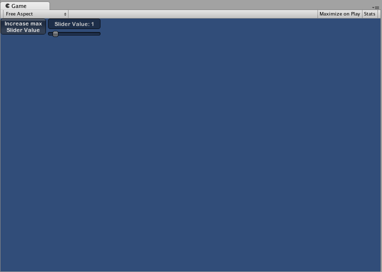

IMGUI Layout Modes
Fixed Layout vs Automatic Layout
There are two different modes you can use to arrange and organize your UI when using the IMGUI system: Fixed and Automatic. Up until now, every IMGUI example provided in this guide has used Fixed Layout. To use Automatic Layout, write GUILayout instead of GUI when calling control functions. You do not have to use one Layout mode over the other, and you can use both modes at once in the same OnGUI() function.
Fixed Layout makes sense to use when you have a pre-designed interface to work from. Automatic Layout makes sense to use when you don't know how many elements you need up front, or don't want to worry about hand-positioning each Control. For example, if you are creating a number of different buttons based on Save Game files, you don't know exactly how many buttons will be drawn. In this case Automatic Layout might make more sense. It is really dependent on the design of your game and how you want to present your interface.
There are two key differences when using Automatic Layout:
- GUILayout is used instead of GUI
- No Rect() function is required for Automatic Layout Controls
/* Two key differences when using Automatic Layout */
// JavaScript
function OnGUI () {
// Fixed Layout
GUI.Button (Rect (25,25,100,30), "I am a Fixed Layout Button");
// Automatic Layout
GUILayout.Button ("I am an Automatic Layout Button");
}
// C#
using UnityEngine;
using System.Collections;
public class GUITest : MonoBehaviour {
void OnGUI () {
// Fixed Layout
GUI.Button (new Rect (25,25,100,30), "I am a Fixed Layout Button");
// Automatic Layout
GUILayout.Button ("I am an Automatic Layout Button");
}
}
Arranging Controls
Depending on which Layout Mode you're using, there are different hooks for controlling where your Controls are positioned and how they are grouped together. In Fixed Layout, you can put different Controls into Groups. In Automatic Layout, you can put different Controls into Areas, Horizontal Groups, and Vertical Groups
Fixed Layout - Groups
Groups are a convention available in Fixed Layout Mode. They allow you to define areas of the screen that contain multiple Controls. You define which Controls are inside a Group by using the GUI.BeginGroup() and GUI.EndGroup() functions. All Controls inside a Group will be positioned based on the Group's top-left corner instead of the screen's top-left corner. This way, if you reposition the group at runtime, the relative positions of all Controls in the group will be maintained.
As an example, it's very easy to center multiple Controls on-screen.
/* Center multiple Controls on the screen using Groups */
// JavaScript
function OnGUI () {
// Make a group on the center of the screen
GUI.BeginGroup (Rect (Screen.width / 2 - 50, Screen.height / 2 - 50, 100, 100));
// All rectangles are now adjusted to the group. (0,0) is the topleft corner of the group.
// We'll make a box so you can see where the group is on-screen.
GUI.Box (Rect (0,0,100,100), "Group is here");
GUI.Button (Rect (10,40,80,30), "Click me");
// End the group we started above. This is very important to remember!
GUI.EndGroup ();
}
// C#
using UnityEngine;
using System.Collections;
public class GUITest : MonoBehaviour {
void OnGUI () {
// Make a group on the center of the screen
GUI.BeginGroup (new Rect (Screen.width / 2 - 50, Screen.height / 2 - 50, 100, 100));
// All rectangles are now adjusted to the group. (0,0) is the topleft corner of the group.
// We'll make a box so you can see where the group is on-screen.
GUI.Box (new Rect (0,0,100,100), "Group is here");
GUI.Button (new Rect (10,40,80,30), "Click me");
// End the group we started above. This is very important to remember!
GUI.EndGroup ();
}
}

You can also nest multiple Groups inside each other. When you do this, each group has its contents clipped to its parent's space.
/* Using multiple Groups to clip the displayed Contents */
// JavaScript
var bgImage : Texture2D; // background image that is 256 x 32
var fgImage : Texture2D; // foreground image that is 256 x 32
var playerEnergy = 1.0; // a float between 0.0 and 1.0
function OnGUI () {
// Create one Group to contain both images
// Adjust the first 2 coordinates to place it somewhere else on-screen
GUI.BeginGroup (Rect (0,0,256,32));
// Draw the background image
GUI.Box (Rect (0,0,256,32), bgImage);
// Create a second Group which will be clipped
// We want to clip the image and not scale it, which is why we need the second Group
GUI.BeginGroup (Rect (0,0,playerEnergy * 256, 32));
// Draw the foreground image
GUI.Box (Rect (0,0,256,32), fgImage);
// End both Groups
GUI.EndGroup ();
GUI.EndGroup ();
}
// C#
using UnityEngine;
using System.Collections;
public class GUITest : MonoBehaviour {
// background image that is 256 x 32
public Texture2D bgImage;
// foreground image that is 256 x 32
public Texture2D fgImage;
// a float between 0.0 and 1.0
public float playerEnergy = 1.0f;
void OnGUI () {
// Create one Group to contain both images
// Adjust the first 2 coordinates to place it somewhere else on-screen
GUI.BeginGroup (new Rect (0,0,256,32));
// Draw the background image
GUI.Box (new Rect (0,0,256,32), bgImage);
// Create a second Group which will be clipped
// We want to clip the image and not scale it, which is why we need the second Group
GUI.BeginGroup (new Rect (0,0,playerEnergy * 256, 32));
// Draw the foreground image
GUI.Box (new Rect (0,0,256,32), fgImage);
// End both Groups
GUI.EndGroup ();
GUI.EndGroup ();
}
}

Automatic Layout - Areas
Areas are used in Automatic Layout mode only. They are similar to Fixed Layout Groups in functionality, as they define a finite portion of the screen to contain GUILayout Controls. Because of the nature of Automatic Layout, you will nearly always use Areas.
In Automatic Layout mode, you do not define the area of the screen where the Control will be drawn at the Control level. The Control will automatically be placed at the upper-leftmost point of its containing area. This might be the screen. You can also create manually-positioned Areas. GUILayout Controls inside an area will be placed at the upper-leftmost point of that area.
/* A button placed in no area, and a button placed in an area halfway across the screen. */
// JavaScript
function OnGUI () {
GUILayout.Button ("I am not inside an Area");
GUILayout.BeginArea (Rect (Screen.width/2, Screen.height/2, 300, 300));
GUILayout.Button ("I am completely inside an Area");
GUILayout.EndArea ();
}
// C#
using UnityEngine;
using System.Collections;
public class GUITest : MonoBehaviour {
void OnGUI () {
GUILayout.Button ("I am not inside an Area");
GUILayout.BeginArea (new Rect (Screen.width/2, Screen.height/2, 300, 300));
GUILayout.Button ("I am completely inside an Area");
GUILayout.EndArea ();
}
}
Notice that inside an Area, Controls with visible elements like Buttons and Boxes will stretch their width to the full length of the Area.
Automatic Layout - Horizontal and Vertical Groups
When using Automatic Layout, Controls will by default appear one after another from top to bottom. There are plenty of occasions you will want finer level of control over where your Controls are placed and how they are arranged. If you are using the Automatic Layout mode, you have the option of Horizontal and Vertical Groups.
Like the other layout Controls, you call separate functions to start or end these groups. The specific functions are GUILayout.BeginHoriztontal(), GUILayout.EndHorizontal(), GUILayout.BeginVertical(), and GUILayout.EndVertical().
Any Controls inside a Horizontal Group will always be laid out horizontally. Any Controls inside a Vertical Group will always be laid out vertically. This sounds plain until you start nesting groups inside each other. This allows you to arrange any number of controls in any imaginable configuration.
/* Using nested Horizontal and Vertical Groups */
// JavaScript
var sliderValue = 1.0;
var maxSliderValue = 10.0;
function OnGUI()
{
// Wrap everything in the designated GUI Area
GUILayout.BeginArea (Rect (0,0,200,60));
// Begin the singular Horizontal Group
GUILayout.BeginHorizontal();
// Place a Button normally
if (GUILayout.RepeatButton ("Increase max\nSlider Value"))
{
maxSliderValue += 3.0 * Time.deltaTime;
}
// Arrange two more Controls vertically beside the Button
GUILayout.BeginVertical();
GUILayout.Box("Slider Value: " + Mathf.Round(sliderValue));
sliderValue = GUILayout.HorizontalSlider (sliderValue, 0.0, maxSliderValue);
// End the Groups and Area
GUILayout.EndVertical();
GUILayout.EndHorizontal();
GUILayout.EndArea();
}
// C#
using UnityEngine;
using System.Collections;
public class GUITest : MonoBehaviour {
private float sliderValue = 1.0f;
private float maxSliderValue = 10.0f;
void OnGUI()
{
// Wrap everything in the designated GUI Area
GUILayout.BeginArea (new Rect (0,0,200,60));
// Begin the singular Horizontal Group
GUILayout.BeginHorizontal();
// Place a Button normally
if (GUILayout.RepeatButton ("Increase max\nSlider Value"))
{
maxSliderValue += 3.0f * Time.deltaTime;
}
// Arrange two more Controls vertically beside the Button
GUILayout.BeginVertical();
GUILayout.Box("Slider Value: " + Mathf.Round(sliderValue));
sliderValue = GUILayout.HorizontalSlider (sliderValue, 0.0f, maxSliderValue);
// End the Groups and Area
GUILayout.EndVertical();
GUILayout.EndHorizontal();
GUILayout.EndArea();
}
}

Using GUILayoutOptions to define some controls
You can use GUILayoutOptions to override some of the Automatic Layout parameters. You do this by providing the options as the final parameters of the GUILayout Control.
Remember in the Areas example above, where the button stretches its width to 100% of the Area width? We can override that if we want to.
/* Using GUILayoutOptions to override Automatic Layout Control properties */
//JavaScript
function OnGUI () {
GUILayout.BeginArea (Rect (100, 50, Screen.width-200, Screen.height-100));
GUILayout.Button ("I am a regular Automatic Layout Button");
GUILayout.Button ("My width has been overridden", GUILayout.Width (95));
GUILayout.EndArea ();
}
// C#
using UnityEngine;
using System.Collections;
public class GUITest : MonoBehaviour {
void OnGUI () {
GUILayout.BeginArea (new Rect (100, 50, Screen.width-200, Screen.height-100));
GUILayout.Button ("I am a regular Automatic Layout Button");
GUILayout.Button ("My width has been overridden", GUILayout.Width (95));
GUILayout.EndArea ();
}
}
For a full list of possible GUILayoutOptions, please read the GUILayoutOption Scripting Reference page.